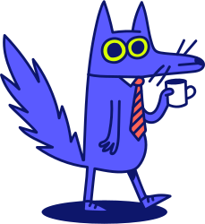
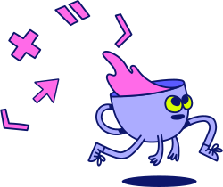
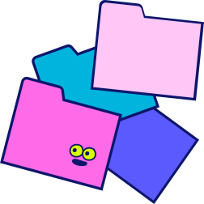
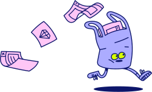
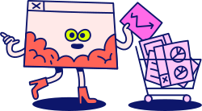
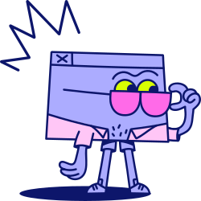
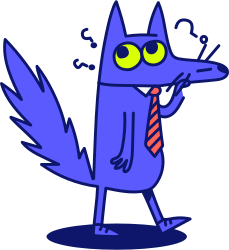

El equipo de Ataskate
Dirección, tres áreas y el cargo de cada persona que construye el Operativo, el Administrativo y el Marketplace.



Tres áreas, un solo producto
Operativa
El punto de venta de la sucursal.
Administrativa
La configuración y el control del negocio.
Marketplace
La tienda en línea para el cliente.

Operativa: el punto de venta
Daniel Boeppler
PO · Líder de áreaEmpeño, cobros, inventario y caja: lo que usa la sucursal todos los días.

Administrativa: el control del negocio
Yeison Del Rio
PO · Líder de áreaSucursales, usuarios, permisos y reglas con las que opera cada casa.
Marketplace: la tienda en línea
Lucas Canha Leite
PO · Líder de áreaDonde el cliente cotiza, compra y paga sin ir a la sucursal.

Todo el equipo, en una sola vista
Operativa7
Administrativa7
Marketplace5
Todo el equipo trabaja con BMAD
BMAD (BMad Method) es un método para construir software con IA dentro de Claude Code. Cada persona usa el agente de su rol, y las decisiones quedan escritas para la siguiente persona.
5 agentes
Analista, Product Manager, Arquitecto, Desarrollador y UX. Cada uno con su menú de tareas.
Skills
Comandos dentro de Claude Code: bmad-prd, bmad-build, bmad-code-review…

Documentos que se heredan
PRD, arquitectura y specs quedan en el repo (_bmad-output). Nadie vuelve a explicar lo mismo.
BMAD en Claude Code, en 4 pasos
Antes
Ten instalado Claude Code, Node.js con Git y uv (docs.astral.sh/uv).
// verifica
node -v
uv --versionInstala los skills
Dentro de Claude Code agrega el marketplace e instala bmad-method y bmad-core-tools.
/plugin marketplace add bmad-code-org/bmad-plugins
o desde la terminal, en la carpeta del repo:
npx skills add bmad-code-org/BMAD-METHOD
Configura el proyecto
Abre Claude Code en la carpeta del repo y pídele al skill bmad:
bmad setup
y verifica versiones con:
bmad status
Trabaja
Pregunta qué sigue o llama el skill de tu rol con tu HU:
bmad ¿qué sigue? /bmad-build HU-CE-617-F
Para actualizar: bmad setup otra vez.
¿Qué skill uso yo?
Daniel, Yeison y Lucas: definen qué se construye y escriben las HUs.
bmad-agent-pmbmad-prdbmad-ticketbmad-correct-courseJuan Carlos y Carolina: llevan el diseño de Figma y el DS a documentos que lee desarrollo.
bmad-agent-ux-designerbmad-uxRogelio: las decisiones técnicas que comparten las tres áreas.
bmad-agent-architectbmad-architectureFront, back y full stack de las tres áreas: spec, código revisado y cierre de cada entregable.
bmad-agent-devbmad-specbmad-buildbmad-code-reviewbmad-retrospectiveEfren y Jesús: pruebas automáticas de lo terminado y revisión guiada de cada cambio.
bmad-qa-generate-e2e-testsbmad-walkthroughbmad-reviewManuel aprueba en los momentos de firma; Raul y cualquiera preguntan qué sigue.
bmadbmad-party-modemorado = agente (se carga y muestra su menú) · gris = skill directo
Dos carriles, tres ambientes
- Product Design hace la maqueta con Claude en localhost, con el DS y el React del repo.
bmad-ux - La comparte en el GitHub Pages de producto para que el equipo la vea.
- Manuel la aprueba al 100% y la versión se guarda en Figma (versionado).
- Recién entonces va el PR al repo y el PO escribe la HU -F.
bmad-ticket - Front la integra, un líder técnico aprueba el PR y entra a QA.
bmad-code-review
- Mismo inicio: maqueta en localhost, GitHub Pages de producto, Manuel aprueba al 100% y versión en Figma.
- La funcionalidad trae su propia maqueta; no edita pantallas ya maquetadas.
- El PO escribe PRD y HUs -B, -F y .1-F.
bmad-prdbmad-ticket - Back prueba en local antes de QA; front integra los servicios en la maqueta (.1-F).
bmad-build - Llega apagada a QA y pre prod hasta que se aprueba.
Reglas para que nada choque
Cada cambio estético va en su propio PR, después de que Manuel aprueba la maqueta.
Si un cambio visual necesita otro dato o endpoint, se pasa al carril 2.
Una funcionalidad trae su propia maqueta o una versión nueva; no cambia una maqueta aprobada.
Se sube a QA y pre prod detrás de un interruptor y se enciende cuando se aprueba.
QA nunca recibe servicios sin probar; así el ambiente de QA no se rompe.
Si dos HUs tocan la misma pantalla, el PO las ordena en el entregable: primero la estética.

Un solo repositorio, con todo el contexto
ataskate/ ├─ CLAUDE.md reglas generales · líderes técnicos ├─ docs/reglas/ diseno.md · front.md · back.md ├─ _bmad/ configuración de BMAD ├─ _bmad-output/ PRD, arquitectura, specs ├─ design-system/ el DS en código └─ apps/ el React real: Operativo, Administrativo y Marketplace
Diseño, POs, front, back y QA trabajan sobre el mismo código y el mismo contexto.
Igual que hoy. Nada entra a QA, pre prod o prod sin su aprobación.
Claude lee el código real, el DS y el CLAUDE.md: las maquetas salen con los componentes y convenciones que ya usamos.
Cada rol es dueño de sus reglas
Diseño cambia las reglas de diseño, front las de front y back las de back. Nadie más las puede cambiar, ni con Claude.
Un archivo por rol
Las reglas que lee Claude están separadas, y cada archivo tiene dueño.
docs/reglas/ diseno.md → Product Design front.md → líderes de front back.md → líderes de back CLAUDE.md → líderes técnicos
Claude conoce al equipo
El repo trae el directorio del equipo con nombre, rol y correo de GitHub. Si dices “agrega a Christian a front”, Claude pone su correo como dueño.
docs/equipo.md Christian Cadena · Front · correo .github/CODEOWNERS docs/reglas/front.md correos de front
Claude pregunta y GitHub bloquea
Claude pide permiso antes de tocar una regla; aunque alguien lo autorice, el PR no entra sin la aprobación del dueño.
.claude/settings.json "ask": [ "Edit(docs/reglas/**)", "Edit(CLAUDE.md)" ] Branch protection ✓ Require review from Code Owners
Claude y Figma, conectados con MCP
¿Qué es MCP?
Model Context Protocol: un conector estándar que le da a Claude acceso a otras herramientas. Con el MCP de Figma, Claude ve tus frames, componentes y variables y puede volverlos maqueta en el React del repo.
Necesitas un asiento Dev o Full en un plan pagado de Figma y Claude Code instalado.
Instala Figma en Claude Code
claude plugin install figma@claude-plugins-official
o el servidor directo:
claude mcp add --transport http figma https://mcp.figma.com/mcp
Conéctalo
En Claude escribe /mcp, elige figma → Authenticate y en el navegador da Allow Access.
Authentication successful. Connected to figma
Haz la maqueta
Pega el link del frame y pide la maqueta con nuestro DS. Manuel la aprueba y la compartes; front la integra.
Haz la maqueta en React de este frame con nuestro DS: figma.com/design/…
Las maquetas viven en localhost hasta que Manuel las aprueba
¿Qué es localhost?
Es tu propia computadora sirviendo la página. Claude la levanta y la abres en el navegador con una dirección como:
http://localhost:4400
Solo tú la ves y nada de lo que cambies ahí afecta QA, back ni front. Es tu espacio para probar sin miedo.
Haz la maqueta
Pídele a Claude que la levante y la ajustas en tu navegador.
Levanta la maqueta en localhost
Compártela
Súbela al GitHub Pages de producto: un link con todos los flujos para que el equipo vea los cambios.
Manuel aprueba al 100%
Con el link de Pages. Ajustas en localhost hasta que la apruebe y guardas la versión en Figma.
Diseño entrega la maqueta. Front la vuelve producto.
Las maquetas quitan el trabajo repetitivo de copiar el Figma pixel por pixel. Lo que hace funcionar al Operativo, al Administrativo y al Marketplace sigue en manos de front.
Integra los servicios
Conecta la maqueta con los servicios de back en cada HU .1-F: datos reales, permisos y reglas del negocio.
Hace real cada estado
Carga, error, vacío, validaciones y casos límite que una maqueta con datos de prueba no ve.
Cuida la calidad
Los líderes técnicos de front revisan y aprueban cada PR de maqueta: estructura, rendimiento y buenas prácticas.
Define cómo se construye
Front decide los componentes y patrones del repo; las maquetas y Claude siguen esas reglas.
Tres áreas. Un solo equipo. Un solo método.
Gracias. ¿Preguntas?